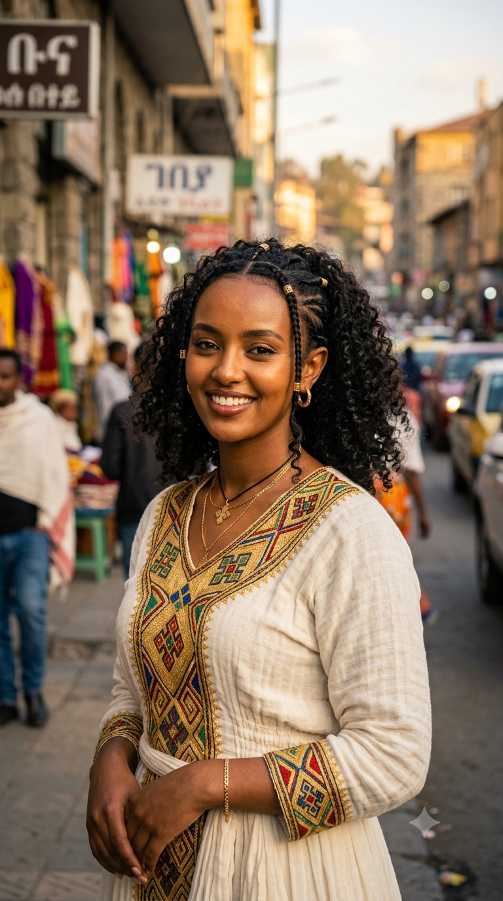
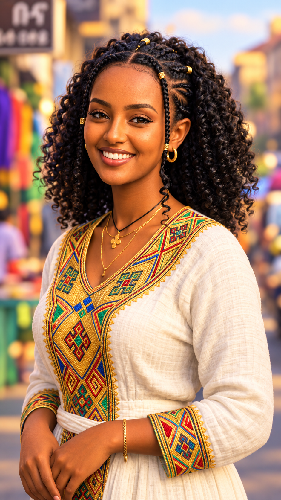
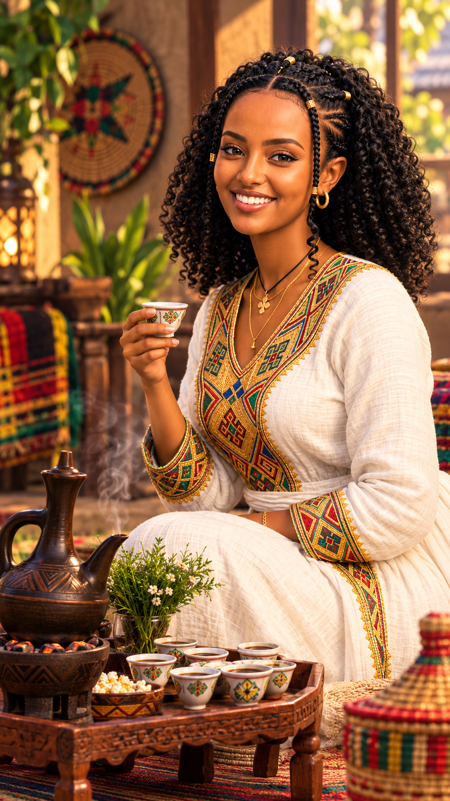

Marvelous Prompt Pioneers
An AI-powered modern Ethiopian fashion campaign blending traditional Habesha Kemis culture with high-fashion cinematic aesthetics through rigorous multi-step prompt engineering.
Group Name
Marvelous Prompt Pioneers
Contains 3 sequential chronological images representing the progression of the Nura Fashion campaign from real-world photography to stylized 3D animation.
Detailed documentation of exact text prompts (Text-to-Image, Guardrail Transformation, and Inpainting Spatial Control) used for each level.
Concise analytical summary evaluating AI identity preservation, cultural preservation, and the prompt engineer's role in multi-step visual pipelines.
Three sequential visual milestones capturing the Nura Fashion campaign evolution.

Photorealistic close-up portrait featuring modern-traditional fusion Habesha Kemis during golden hour in Addis Ababa.

Style transformation maintaining 100% facial identity guardrails, exact facial structures, and intricate clothing details.

Inpainting background modification introducing traditional clay jebena, rekebot, and cultural artifacts while keeping model identical.
Detailed logs of exact text prompts and custom instructions utilized across all three levels.
A cinematic close-up portrait of a stylish young Ethiopian woman wearing a modern-traditional fusion Habesha Kemis with intricate contemporary embroidery. Captured during golden hour with warm, soft sunlight illuminating her features. Shot on an 85mm lens, f/1.8 aperture, beautiful shallow depth of field with a softly blurred traditional Addis Ababa street background. Photorealistic, 8k resolution, highly detailed textures --ar 9:16
Using the uploaded reference image, transform the portrait into a 3D Pixar and Disney Anime style. Maintain 100% facial identity guardrails: keep her exact facial structure, eye shape, smile, and hairstyle from the original photo. Vibrant colors, high-end digital animation style, soft cinematic studio lighting, portrait framing --ar 9:16
Modify the background using the inpainting brush tool to include a traditional Ethiopian coffee ceremony setup with a beautifully crafted clay jebena, tiny traditional coffee cups, roasted coffee beans, incense, and a low carved wooden table (rekebot). Change the character’s pose from sitting to a natural, elegant standing three-quarter view, with her full body visible and a relaxed, confident posture. Keep her facial features, hairstyle, skin tone, expression, clothing style, traditional Ethiopian clothing details, jewelry, proportions, and 3D animation art medium completely unchanged. Place her naturally within the Ethiopian coffee ceremony environment, with realistic interaction between the character and the surrounding scene. Add warm ambient golden lighting, soft natural shadows, detailed Ethiopian traditional decorations, woven textiles, plants, and authentic cultural elements in the background. Maintain the original character identity and visual style exactly. Do not redesign or replace the character. Only change the pose and enhance the background. Highly detailed, cinematic composition, realistic 3D animated rendering, warm atmosphere, natural depth of field, polished professional quality.
Comprehensive summary and evaluation of creative choices and prompt engineering methodologies.
The "Nura Fashion" campaign successfully bridges the gap between rich Ethiopian cultural heritage and modern aesthetics. By utilizing a real Addis Ababa street setting in Step 1, the brand establishes an authentic, grounded identity. The transition through subsequent styles maintains this cultural narrative while experimenting with visual storytelling and environmental immersion.
Maintaining facial consistency across different steps was achieved by carefully managing prompt parameters and utilizing identity guardrails. This ensures that "Nura Fashion" has a recognizable, signature virtual model representing the brand throughout the multi-step campaign pipeline without losing likeness or cultural authenticity.
Working as a Prompt Engineer for this project highlighted the importance of precise vocabulary—such as specifying camera lenses (85mm, f/1.8), lighting conditions (golden hour), and exact spatial controls for inpainting. Balancing descriptive text with structural constraints allowed for seamless creative output from text-to-image to final composition.